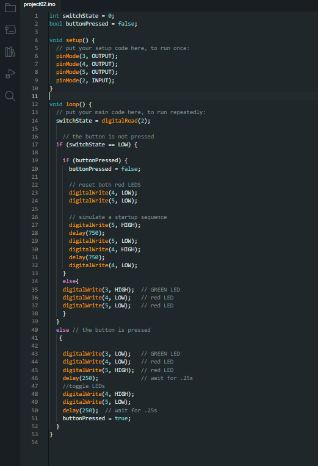

An Arduino-based Light Theremin Project
An Arduino-based Light Theremin Project Parallax Occlusion Mapping with AI-Generated Depth Maps
Parallax Occlusion Mapping with AI-Generated Depth Maps Building a Musical Keyboard with Arduino
Building a Musical Keyboard with Arduino
Arduino offers endless possibilities for creators, hobbyists, and tech enthusiasts. One such project is the "Spaceship Interface," which can transport you to the realms of 1970s science fiction movies. Let's delve into the process of creating this captivating project. Here's a brief overview:
- A green LED will remain illuminated
- Upon pressing a button, the green LED will turn off
- Two other lights will start blinking when the button is pressed
The Basics
Every Arduino program revolves around two primary functions: setup() and loop(). The setup() function runs once when the Arduino powers on, configuring the digital pins as inputs or outputs. The loop() function, on the other hand, runs continuously, checking for voltage on the inputs and toggling outputs accordingly.
The Code
Coding is the heart of this project. The program begins by setting up the pins connected to the LEDs as OUTPUTs and the switch pin as an INPUT. The main loop then continuously checks the voltage level on the digital input using the digitalRead() function. Depending on the switch's state, the LEDs are controlled to simulate the spaceship's actions. Below is the code used for the project:

User Experience
When designing an interface, it's vital to consider the user's expectations. Immediate feedback upon pressing a button enhances the user experience. Delays can be introduced using the delay() function, but it's crucial to ensure they don't interfere with the interface's responsiveness. In my version of this project, I included code to simulate a startup sequence when letting go of the button.
Conclusion
The "Spaceship Interface" project is a testament to the versatility and potential of Arduino. It serves as a foundation for enthusiasts to expand upon, perhaps by adding more LEDs, switches, or even integrating sensors. The key takeaway is to always place yourself in the user's shoes, ensuring that the interface aligns with their expectations.